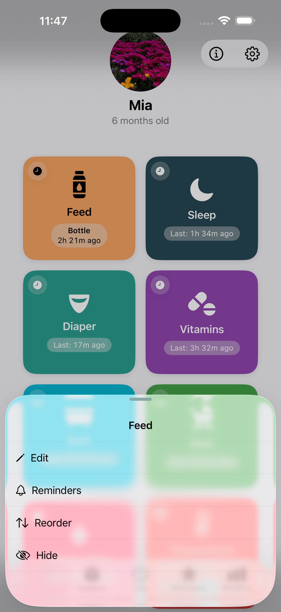
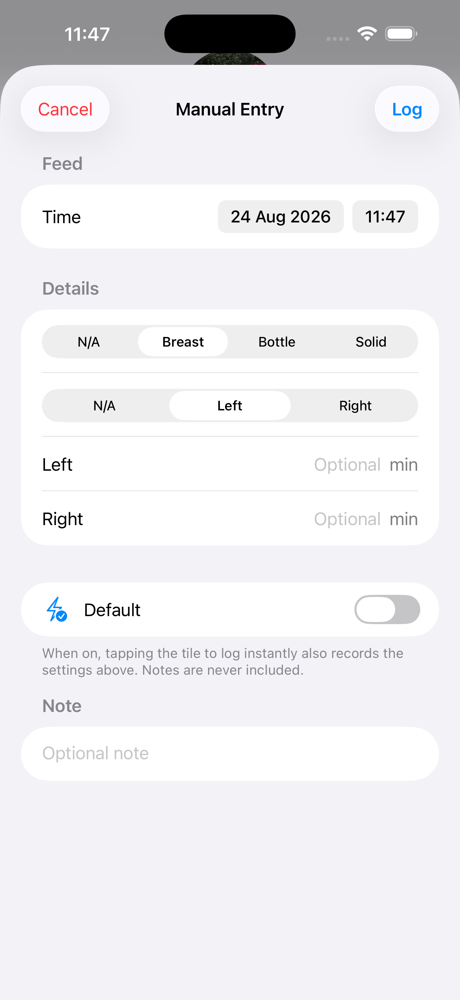
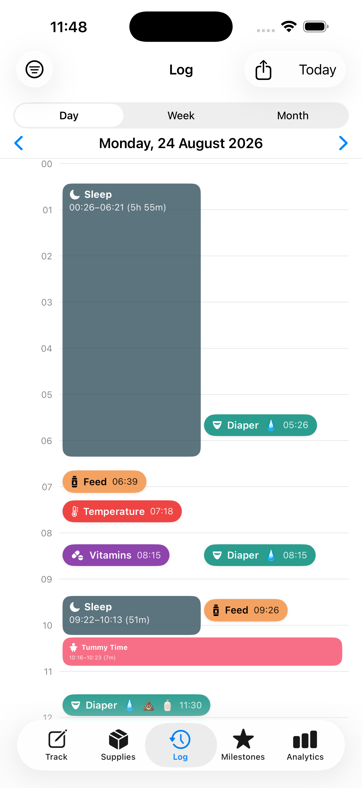
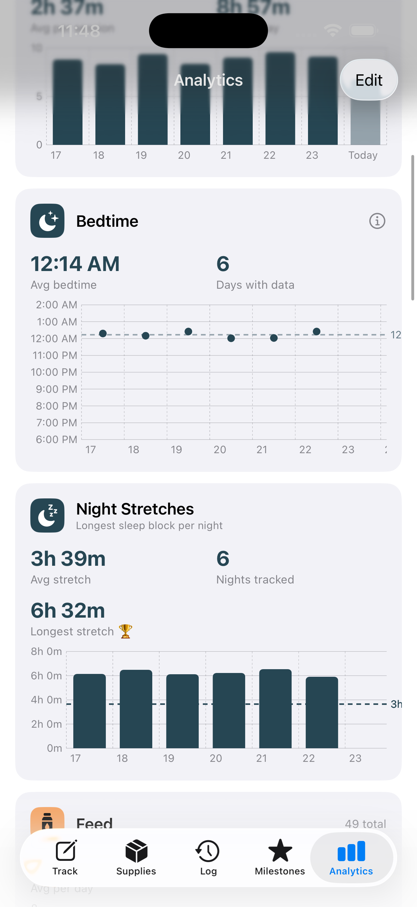
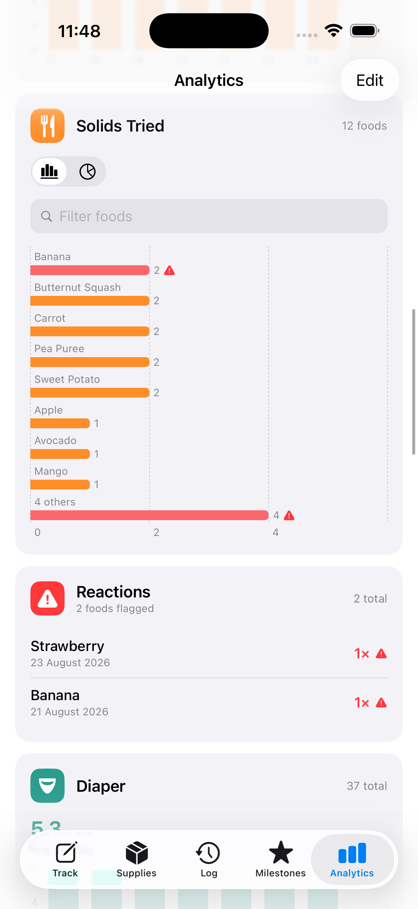
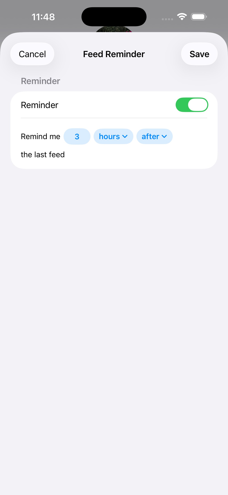
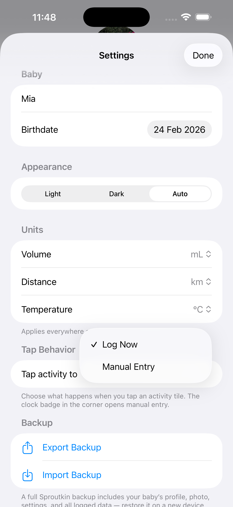

User Guide
Everything you need to get the most out of Sproutkin.
On this page
Tracking activities
The Track tab is your home base — a grid of every activity you care about, one tap away.
Feeds
Breast, bottle, or solid food. Each has its own detail options.
Sleep
Start a timer when baby goes down, stop it when they wake up.
Diaper
Quick log with wet, dirty, or mixed options.
Custom
Add anything else — tummy time, bath, vitamin, walk, and more.
Quick log: Tap an activity tile to log it instantly with no extra details. Tap the tile title or use the detail sheet to fill in amounts, durations, and notes.

Adding a custom activity
Tap the + button
Found in the top-right corner of the Track tab.
Choose a name, icon, and color
Pick from a library of icons or use an emoji. Choose a color that makes it easy to spot in the grid.
Set optional details
Turn on amount or note fields if you want to record more than just a timestamp.
Feeds in detail
Sproutkin tracks three feed types, each with relevant detail fields.
🤱 Breast
Log which side you fed from (left, right, or both) and for how long. Sproutkin remembers the last side used and highlights the other one as a starting suggestion for the next session, so you never lose track.
🍼 Bottle
Record the amount fed in your preferred unit (oz or ml — change this in Settings). Works for formula, expressed milk, or water.
🥣 Solids
Enter the food name and optionally the amount. If you're introducing a new food and want to watch for a reaction, toggle Possible allergic reaction — this is reset automatically on each new solid feed so you only flag it when relevant.
Allergy flags are surfaced in your log so you can quickly review reactions alongside what was eaten.

Log & timeline
A full history of every entry, grouped by day, with a visual timeline.
Swipe to the Log tab
Entries are listed in reverse chronological order. Swipe up to load older days.
Tap any entry to edit it
Correct the time, amount, notes, or any other detail you logged.
Swipe left to delete
Remove an entry if it was logged by mistake.
Timer entries: Sleep and timed activities show their duration inline. The timeline view makes it easy to spot overlapping or unusually long sessions.

Analytics
Spot patterns across days and weeks — average feeds, sleep totals, and more.
The Analytics tab breaks down your logged data into charts and summaries. Use the date range picker to zoom in on a specific period or see a longer-term trend. Each activity type can be toggled on or off so you can focus on what matters most right now.
Customize what you see: Tap Edit in the top-right of Analytics to show, hide, or reorder any card.


Milestones
Capture the moments that matter — first smile, first roll, first word.
Open the Milestones tab
You'll see a list of common developmental milestones, plus any you've added yourself.
Tap a milestone to record it
Add the date it happened and an optional note or memory.
Add your own
Use the + button to create a custom milestone for anything the built-in list doesn't cover.
Reminders
Optional local notifications — no account required.
You can set reminders for any activity. For example:
- Time-based: "Remind me to give vitamins every morning at 8 am."
- Interval-based: "Remind me if it's been more than 3 hours since the last feed."
- Supply-based: "Alert me when formula stock is running low, based on my average daily usage."
Setting up a reminder
Go to Settings → Reminders
Tap any activity to configure its reminder options.
Choose the reminder type and timing
Adjust the interval or specific time to fit your routine.
Allow notifications when prompted
iOS will ask for permission the first time. You can also grant this in iOS Settings → Sproutkin → Notifications.

Silence overnight: Use iOS Focus or Do Not Disturb to pause Sproutkin notifications during sleep hours — no extra setup needed in the app.
Sharing & backup
Move your data between devices or share it with a co-caregiver using a .sproutkin file.
Exporting a backup
Go to Settings → Backup & Restore
Tap Export
A .sproutkin file is created and shared via the standard iOS share sheet. Save it to Files, iCloud Drive, or send it directly.
Sharing with a co-caregiver
Sproutkin uses a safe insert-only merge — importing a .sproutkin file adds any entries that aren't already in your log, without overwriting anything. This means both caregivers can log independently and then merge their records by exchanging files.
- Caregiver A exports their data and sends it to Caregiver B.
- Caregiver B opens the file and taps Import.
- New entries are added; duplicates are skipped automatically.
Files are never uploaded to any server. Sharing is entirely between devices, using the apps and services you already trust.
Settings
Personalize the app to match how you work.

Units of measurement
Choose between oz and ml for volume. All amounts are converted automatically when you switch — past entries update too.
Reminders
Manage all reminders from one place. Use iOS Focus or Do Not Disturb to silence notifications overnight.
Backup & restore
Export or import your data at any time. Useful when switching phones or sharing with a co-caregiver.
Baby profile
Update your baby's name, date of birth, and photo. The photo is stored only on your device.